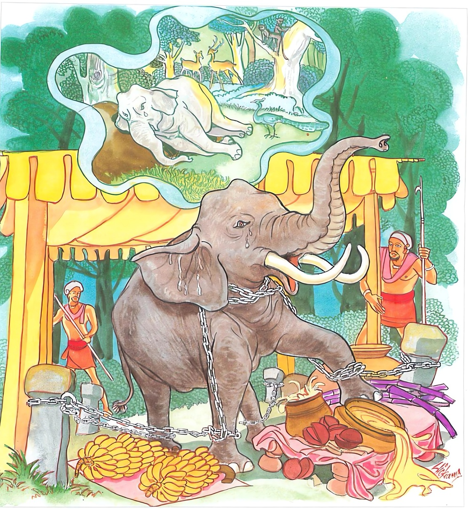

23-3 එක්තරා බ්රාහ්මණයකුගේ පුතුන් පිළිබඳ පුවත
මෙම කතාව සද්ධර්ම සාගරයෙන් ද කියවන්න.
ධනපාලකො නාම කුඤ්ජරො කටුකප්පභෙදනො දුන්නිවාරයො.
බද්ධො කබලං න භුඤ්ජති සුමරති නාගවනස්ස කුඤ්ජරො.
ධනපාලක නම් (මාතෘපෝෂක) ඇත් තෙම දෙකන් සිලින් වැහෙන තීව්ර වූ මද ඇත්තේ, කිසිවක්හු විසින් නොවැළැකිය හැකි වූයේ, (ඇත්හලට ගෙණවුත් විසිතුරු තිරයෙන්) පරික්ෂිප්ත කරණ ලදුයේ, (රජහු එළැවූ නොයෙක් රසවුලෙන් යුත්) රාජ භෝජනය පවා (මාතෘවියෝගයෙන් දුඃඛිත බැවින්) නො කන්නේ ය. ඒ ඇත් තෙම (මව වසන) නාගවනය ම සිහි කරන්නේ ය.

"ධනපාලකොති” යන මේ ධර්මදේශනය ශාස්තෲන් වහන්සේ සැවැත්නුවර වැඩසිටියදී එක්තරා බ්රාහ්මණ පුත්රයෙක් නිමිති කරගෙන දේශනා කළහ.
සැවැත් නුවර එක් බ්රාහ්මණයෙක් ලක්ෂ අටක මහත් සම්පත් ඇතිව වයසට පත් පුතුන් සතර දෙනාම ආවාහ කර එක් අයකුට ලක්ෂය බැගින් ලක්ෂ හතරක් දුන්නේය. අනතුරුව බැමිණිය කළුරිය කළවිට පුත්තු මෙසේ කතිකා කළහ. ඉදින් පියා අනෙක් බැමිණියක් ගෙනෙන්නම්, ඇගේ කුසේ උපන් අය වශයෙන් කුලය බිදේ - අප ඔහු බලාහදාගෙන උවැටන් කරන්නෙමු ඔහුට ප්රනීත ආහාරපාන වලින් සංග්රහ කරයි. අත්පා මිරිකීම්, පිළිදැගුම් කීරිම් ආදිය කොට උවටැන් කර එක් දිනක් බමුණා දවල් නිදා අවදි වුවහුට අක්මා සම්බාහනය කරමින් ගෙදර දුක් ආදිය කියා "අපි ඔබට මේ ආකාරයෙන් දිවි ඇතිතෙක් උවටැන් කරන්නෙමු” ඉතිරි ධනයද අපට දෙන්නැයි ඉල්ලූහ. බ්රාහ්මණයා නැවත එකිනෙකාට ලක්ෂයක් බැගින් දී තමන්ට අදින පොරවන පමණක් තබාගෙන සියළු උපභෝග පරිභෝග ද කොටස් හතරක් කර පවරා දුනි. ඒ දෙටුපුතා දින කීපයක් උවටැන් කළේය. අනතුරුව එක් දිනක් බමුණා දිය නා එනවිට දොර කොටුවේ සිටි ලේලිය මෙසේ කීවාය. ඔබ විසින් දෙටුපුතාට සීයක්ලෝ දහසක් හෝ අතිරේක යමක් දුන්නේද? හැම දෙනාටම ලක්ෂ දෙක බැගින් දුන්නේද? ඇයි අනෙක් පුතුන්ගේ නිවෙස්වලට යාමට මාර්ගය නො දන්නේද? විමසීය - ඔහුද වසලීයයි කිපී අනිකෙනෙකුගේ ගෙට ගියේය. එහි ද දින කීපයට පසු මෙබඳු උපායෙන් පලවා හැරියේ අනෙකා ගේ ගෙටගියේය. මේලෙසට එක ගෙයකටද පිවිසීමට නොලැබ පඬරඩග පැවිද්දෙන් පැවිදි වී මහමග සිගාකන්නෙකු වී භික්ෂාවේ යෙදෙමින් කල් ගෙවුන පසු, ජරාවෙන් දිරාගියේ නරක භෝජන නරක සයන ආදීයෙන් මැලවුන ශරීර ඇතිව භික්ෂවේ යෙදෙන්නටද අපොහොසත්ව අවුත් පිලේ නිදා ගෙන අවදිවී, වාඩී වී සිටියේ තමන් දෙස බලා දරුවන් ගෙන් තමන්ට පිහිටක් නොලබන්නේ මෙසේ සිතුවේය. භවත් ගෞතමයන් වෙත ගිය හොත් හේ බැම නොහකුළා උඩුකුරු නොකොට - සිය මුහුණු ඇතිව පිළිසඳර කථාවේ දක්ෂ වු භවත් ගෞතමයන් වෙත එළඹ පිළිසඳරක් ලබමියි, ඔහු අඳින පෙරවන සළුව තබා භික්ෂා භාජනය ගෙන දණ්ඩක් අතින් ගෙන බුදුන් වෙතට ගියේය. මෙසේ ද කීය. ඉක්බිති එක්තරා බමුණු මහසල් කෙනෙක් රූක්ෂ වු පොරෝණාද ගෙන, දුකට පත්ව බුදුන් යම් තැන කද එතැනට එළඹුනි” බුදුහු එකත් පසෙක සිටි ඔහු සමග පිළිසඳර කථාකොට මෙසේ වදාළහ. කුමක්නිසා බ්රාහ්මණය ඔබ රූක්ෂ වුයේ, කටුක වු දිවියක් ගෙවන්නේ ඇයි භාග්යවත් ගෞතමයන් වහන්ස, මට පුත්තු සිව් දෙනෙකි. ඔවුන් භාර්යාවන් හා කථාකොට ගෙවලින් බැහැර කළාහුය. එසේ නම් බ්රාහ්මණය මේ ගාථාව සම්පුර්ණ කර මහජනයා රැස් වු කල සභාවක පුතුන්ද සිටි අවස්ථාවක කියන්න.
1. යම් පුතුන් සමග මම සතුටු වීම් ද යම් පුතුන් ගේ දියුණුව කැමැති වීම්ද? | ඒ දරුවෝ බල්ලන් ලවා ඌරන් ලුහුබඳ වන සේ භාර්යාවන් නිසා මුළාවී දැන්මා එළවා දමයි.
2. අසත් පුරුෂ වු මගේ දරුවෝ දුටුතැන තාත්තේ කියා හැසිරෙති රැක්ක යුතු අවධියේ මා අත්හළ ඔහු පුතුන් ලෙස පෙනී සිටි යක්කුය.
3. ධාවනයට නුසුදුසු වූ මහළු වූ අශ්වයකු අත්හැර දමන්නා සේ, සම්පත් | රහිත වූ දිරාපත් මා පුතුන් විසින් අත්හරින ලදුව අනුන්ගේ ගෙවල්වල සිගාකයි.
4. ඒ මාගේ අසත්පුරුෂ දරුවන්ට වඩා මේ සැරයටිය උතුම් ය. අනුන්ට " එන ගොන් හරක්, කන්ට ආ බල්ලන් එළවා මා ආරක්ෂා කරන හෙයිනි.
5. අඳුරු තැන දී සැරයටිය පෙරටු වෙයි. ගැඹුරු දියෙහියන කල පිටි වහල් වෙයි. යන කල පැකිල ගියත් සැරයටියේ පිහිටෙන් නැගිට සිටිය හැකිය.
ඔහු ද බුදුන්ගෙන් මේ ගාථා ඉගෙන එබඳු වු බ්රාහ්මණයින් රැස්වන දිනයක දී සියළු අලංකාරයන්ගෙන් යුතු වැ පුතුන් වටිනා අසුන්වල සිටින විට, මේ මට සුදුසු කාලයයි සිතා පිරිස මැදට පිවිස, අත උස්සා ඔබට ගාථා සතරක් කියන්නට කැමැත්තෙමි. අසයයි කීය. බ්රාහ්මණය කියන්න අපි අසනෙමුයි, කීවිට, සිටගෙනම පැවසුවේ මෙසමයෙහි මිනිසුන්ගේ පිළිවෙතක් වෙයි. යමෙක් මවුපියන් සතුදේ කයිද එසේ කමින් ඔවුන් පෝෂණය නො කරයිද ඔහු මැරිය යුතුයයි සම්මතයක් විය. මේ නිසා එම බ්රාහ්මණ දරුවෝ පියාගේ පා පිට වැටී අපට ජීවිතය දෙන්නැයි ඉල්ලා සිටියහ. ඔහු පුතුන් කෙරෙහි මෘදුබව නිසා මගේ පුතුන් විනාශ නොකරන්න. මාව පෝෂණය කරන්නේත්යයි පැවසුවේය. අනතුරුව පුතුන්ට මිනිස්සු කීවාහුය. ඉදින් අදපටන් පියාට හොඳින් නො සලකන්නේනම් තොප ඝාතනය කරන්නෙමු. ඔවුහු බියට පත්ව පියා පිටේ තබාගෙන ඉමු නැගිට ගෙට ගෙන ගොස් සිරුර තෙල් ගා තවා සම්බාහනය කොට සුවඳ සුණු ආදියෙන් නාවා බැමිණියන් කැඳවා අදපටන් අපේ පියා මැනවින් පෝෂණය කරමු. ඉදින් තොපි ප්රමාද වන්නෝනම් තොප ම නිග්රහ කරමු යි කියා ප්රණීත භෝජන වැළඳ වූහ. බ්රාහ්මණයා හොඳ ආහාරද සුව පයද ලැබ දින කීපයකින් හටගත් බලය ඇත්තේ පිනවූ ඉන්ද්රිය ඇත්තේ ආත්මභාවය බලා මම මේ සම්පත් භවත් ගෞතමයන් නිසා ලබන ලද්දේ වෙමි. පඩුරු වෙනුවෙන් එක් සළු යුගලක් ගෙන බුදුන් වෙත ගොස් කරන ලද පිළිසඳර ඇත්තේ එකත්පසෙක සිට එම වස්ත්ර යුගලය බුදුන් පාමුල තබා පින්වත් ගෞතමයාණන් වහන්ස. අපි බ්රාහ්මණයෝ වෙමු. ඔබ වහන්සේ අපට ගුරුව සිටිහෙයින් ගුරු පුජාවක් කරන්නෙමි. පිළිගනු ලැබේවා, මේ ආචාර්ය ධනයයි (ගරුභාගයයි) බුදුරජාණන් වහන්සේ ඔහුට අනුකම්පාවෙන් එය පිළිගෙන ධර්මය දේශනා කළහ. දේශනය අවසන බ්රාහ්මණයා සරණයෙහි ද පිහිටා මෙසේ පැවසුවේය. පින්වත් ගෞතමයාණනි මගේ පුතුන්ගෙන් නිතර ලැබෙන බත් කොටස් හතරකි. ඉන් දෙකක් මම ඔබ වහන්සේට දෙනෙමි. අනතුරුව බුදුරජාණන් වහන්සේ යහපති බ්රාහ්මණය. මම ඔබ රුචි තැනකට එනෙමි යි පවසා පිටත්කර හැරියේය. බමුණ ගෙට ගොස් පුතුන්ට මෙසේ කීවේය. දරුව භවත් ගෞතමයන් මන්ගේ සහායකයායි. උන්වහන්සේ වැඩම කළවිට පමානොවමු. ඔවුහු හොඳයි පියාණනි. බුදුහු දෙවන දවස්හි පිඬු පිණිස හැසිරෙන අතර ජ්යෙෂ්ඨ පුතුගේ නිවසට වැඩම කළහ. ඔහු බුදුන් දැක පාත්රය ගෙන ගෙට පිවිස වටිනා පීඨයක වාස කරවා ප්රණීත භෝජන දුන්නේය. බුදුහු දෙවන දින අනෙක් අනෙක් නිවෙස් වලට පිළිවෙලින් සියළු ගෙවල් වලට ගියේ. ඔවුහු සියල්ලෝම එලෙසටම සත්කාර කළාහුය. අනතුරුව එක් දිනක් ජ්යෙෂ්ඨ පුතු මංගල කරුණක් එළඹ විට පියාට කීවේය. පියාණනි කාට නම් මංගල බත දෙන්නේද කියා මම නො දනිමි. භවත් ගෞතමයන් මගේ මිතුරා නොවේද? එසේනම් හෙට උන්වහන්සේ සහිත පන්සියයක් භික්ෂූන්ට ආරාධනා කරන්න. බ්රාහ්මණයා එලෙස කළේය. බුදුහු දෙවැනි දිනයෙහි පිරිවර සහිතව ඔහුගේ ගෙට වැඩම කළහ. ඔහු කොළපාට සායම් ගා සියළු අලංකාරයෙන් සරසන ලද ගෙයි බුද්ධ ප්රමුඛ මහා සංඝයා වාඩිකරවා ජලය අඩුවෙන් යෙදු පැනි කිරිබත් ද ප්රණිත බද්ද වැළඳවුහ. දන්වළදා අවසන බමුණාගේ පුතුන් හතරදෙන බුදුන් ලඟ වාඩිවී මෙසේ කීහ. පින්වත් ගෞතමය අපි අපේ පියා පෝෂණය කරමු. ප්රමාද නොවෙමු. මොහුගේ භාවය බලන්න බුදුහු ඔබලා විසින් යහපතක් කරන ලදී මවුපිය පෝෂණය නම් පෞරාණික පණ්ඩිතයන්ගේ අවීණ සිරිතකියි. පවසා "තස්ස නාගස්ස විප්පවාසෙන විරූළහා සල්ලකි කුටජා” ආදී වු මේ එකාදස නිපාතයේ මාතු පොසක නාගරාජ ජාතකය විස්තර වශයෙන් කියා මේ ගාථාව වදාළහ.
ඇත් හලෙහි දම්වැලින් - බැඳ දැමුව ඇත් රජද
තමන්ගේ නිජ බිමම - සිහි කරයි එකසිතින්
රජ බොජුන් ඉවතලති - "දනපාල” මව නිසා
ධනපාලක නම් වු ඇතා තියුණු වද ඇත්තේ නොවැලැක්විය හැක්කේ ඇත් හැලේ බඳින ලද්දේ ආහාර නොබුදියි. ඒ ඇතා ඇතුන් සිටින වනයම සිහිකරයි.
එහි ධනපාලකො නාමාති - යනු එදවස කාසි ජනපදයේ රජුන්ගේ ඇතුන් පුහුණු කරන්නා යවා රමණිය නාග වනයෙන් ගෙන්වන ලද ඇතාගේ මේ නම වේ. කටුකප්ප භෙදනොති - තියුණු මද ඇත්තේ මද වැගිරෙන කල කන් කඩා හැළෙයි. ප්රකෘතියෙන් ඇත්තේ මේ කාලයේ දී අංකු - (හෙණ්ඩුව) හෝ කුන්තායුධ තෝමර පවා කඩා දමති. චණ්ඩ වෙති. ඔහු ඉතා දරුණුය. "කටුකප්ප භේදනො දුන්තිවාරියො” යනු එහෙයින් කියන ලදී. බද්ධෝ කබලං නභුඤජතී මේ ඇතා ඉතා සැඩය. බඳින ලද ඔහු ඇත් හලට ගෙනගොස් පරික්ෂේප කොට සුවඳ පිරිබඩ කොට උඩුවියන් බැඳ රජුගේ රජ බොජුන් සමාන නොයෙක් රසවත් භෝජන දුන්නත් ඔහු කිසිවක් කෑමට අකමැති විය. එම කරුණ නිසා බද්ධෝ කබලං නභුඤජතී කියන ලදී. ඝුමරති නාගවනඝ්ඝා තමන් වසන නාග වනය ඉතා සිත්කළුය. මේ නාග වනයෙහි වෙසෙන මගේ මව පුත්ර වියෝගයෙන් දුකට පත්වූවාය. මාතෘ උපස්ථානය නම් වු ධාර්මික ප්රතිපදාව නොපුරා මේ බොජුන් වැළදීමෙන් කවර සුවයක්ද? එහෙයින් නාග වනයෙහිම සිට මාතෘ උපස්ථනය කරන්නට පුළුවන් වේ යයි මෙය කියන ලදී. සුමරති නාගවන කුජරො - ශාස්තෲන් වහන්සේ තමන්ගේ පුර්ව චරිතය ගෙන හැර දක්වා ධර්ම දේශනා කරත්ම ඒ සියල්ලගේ ඇස් කඳුළු වලින් පිරී මෘදු හදවතින් යුතුව කඳුළු ධාරා ගලා ගියේය. ඉක්බිති භාග්යවතුන් වහන්සේ ඔවුන්ට සප්පාය වන පරිදි චතුරාර්ය සත්යය දේශනා කළහ.
දේශනාවසානයේ පුතුන් සමග බ්රාහ්මණයා සෝවාන් ඵලයෙහි පිහිටියාහුය.